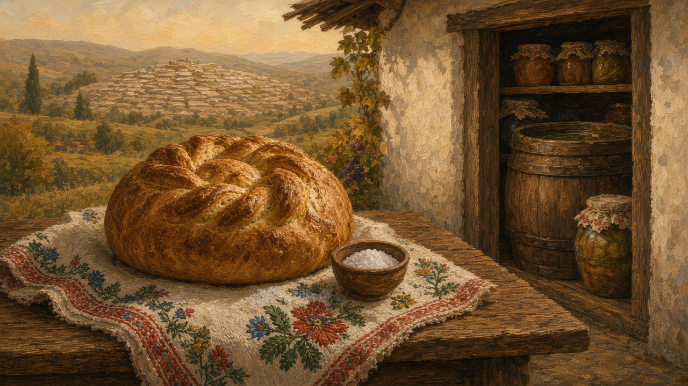
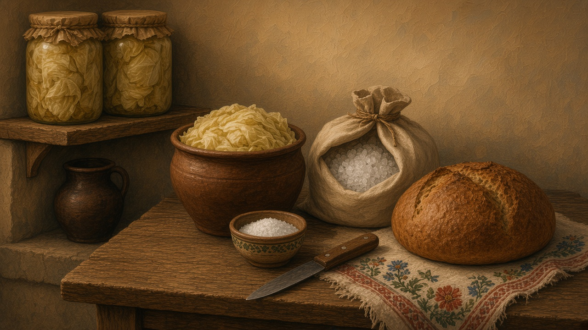

Salt
Sare. The grain on the cloth and in the brine. Not a spa brochure, and not the wind off the mare.

On the cloth
A guest is still met, in some yards, with pâine și sare — bread and salt on the same embroidered cloth. You break, you salt, you sit. The loaf of that welcome is on bread. This page is the pinch. It is older than a printed menu and smaller than a speech. A wedding may still put it at the gate; a weekday house may only keep the habit in the word. Wine or the stronger glass may follow — those pours sit on wine and țuică — but the first thing on the cloth is still the grain. You do not need a ritual script. You need the habit of asking whether this table still sets salt out, or only a shaker next to the shop bag.
The pinch is small on purpose. A little heap in a dish, or a few grains already on the cut face of the loaf. Someone older usually sets it — the host, a grandmother — and the guest takes bread first. The cloth may be the one with the red flowers, or a plain one that still gets washed for a guest. You do not measure it. The bread should taste like bread. A house that only keeps the phrase still knows what the phrase is asking for.
What the cellar keeps
Salt is how autumn lasts. Varză murată, cucumbers in a jar, slănină packed so the cold room can hold it, telemea sitting in saramură — brine — until the cheese can travel; that white salt is on cheese. A jar of miere may sit higher, away from the barrel — that one is on honey. The plant half of that shelf is the hurry on harvest. The animal half, the rounds that come down with the flock, is on shepherds. The attic and the cellar that hold the jars are rooms of the house. Winter opens them when the garden is empty. Vinegar and sugar have their own smell in those weeks. Salt is quieter. It is already in the barrel before anyone talks about a feast.
Each jar has its own job. Varză murată sits in a crock or a barrel, the leaves held under with a plate or a clean stone so they stay in the brine. Cucumbers go into glass the same week, dill if the garden still has it. Slănină is the other use of the same grain: slabs packed in salt so the cold room can hold what the pig gave, through months that are not a feast. Telemea wants a clearer saramură, enough to cover the slabs. A lid that does not quite seal still counts. You notice the salt when a jar is opened in January and the cabbage is still cabbage.
How the jars get filled
After the cabbage comes in, the kitchen has an order. A pot of water. Salt stirred in until the brine tastes like the one this house already trusts, a memory in the wrist. The leaves are packed tight. A weight keeps them under. If the house still has a barrel, that takes the rest. Cucumbers and green tomatoes wait their turn on the same table. The knife stays out. The open bag is sare gemă, the coarse crystals, because the fine salt in the shaker is the wrong grain for a barrel.
You do not need a card. The recipes tab assumes the shelf already exists. This is the quieter hour after that hurry, when the jars are wiped and carried down. Paper and string over the mouth is enough. What matters is that the brine covers the food, and that someone looks before the first hard cold.

The ocnă
Sare gemă, rock salt, sits under hills people still name: an ocnă, a salină, a white room that used to be a job. Turda, Praid, Slănic, Ocnele Mari — you do not need the tourist lighting or the ferris wheel some of those holes grew later. You need the older fact: this country has salt in the ground, and people went down for it. Rome already moved that cargo with the gold from the highland mines; that short provincial century is on the timeline and in the lesson on the Latin that stayed. A village that lived by the shaft said ocnă the way another village said moară. The word stayed after most of the work left.
The older picture is a workplace. A lamp in the white room. Walls that took the light and gave it back. Boots that never quite dried. Men went down on a shift. The salt came up in pieces, then in bags, then on a cart. The village ate because that cart left. Later some of those holes were lit for visitors, with a path and a railing. The memory here is the earlier one: a hill named for what was taken out of it, and a job that had a lamp.
The pinch in the pot
Weekday salt is smaller than the barrel. It goes into the pot when the soup already smells of beans or bones. It goes over cabbage in the pan. A few grains wait on the board before the loaf is cut, so the first slice is not plain. You taste with the wooden spoon. You add once. The same shaker serves a fast day and a Sunday. What else is in the pot is the calendar on the year. Mămăligă takes the salt in the water. The cheese on the side already carries its own — that plate is on cheese. This is only the habit of the hand, the one a child learns by watching.
The bag from town
Most kitchens now buy a box. Iodized, fine, a paper sack or a plastic cylinder from the piață — that square still sends a household home with oil, sugar, and salt; the day is on the market. The bag has a size: a kilo, sometimes more, paper that tears at a damp corner, or a box with a pour spout. A house that still packs slănină may keep a second bag of the coarse kind for the crock. You notice the sack when it is almost empty, because the shaker goes quiet and the soup tastes thin.
The sea has another salt entirely, the wind off the mare. That horizon is on the sea. Here the claim stays in the kitchen: whether this house still knows a cellar that needs a bag, or only a pinch for the pot.
When the barrel is gone
Fewer cellars keep a barrel of varză. Apartment kitchens keep a shaker by the stove and a small jar in the door. The embroidered cloth is in a drawer. The ocnă is a name someone has heard, or a shift a grandparent worked. The welcome, when it still happens, may be a shop loaf and a pinch from that shaker. Sare still means the grain you trust if the soup is right.
This page is only that: the pinch on the cloth, the brine that keeps the winter, the white hill, and the word that outlasted the mine.